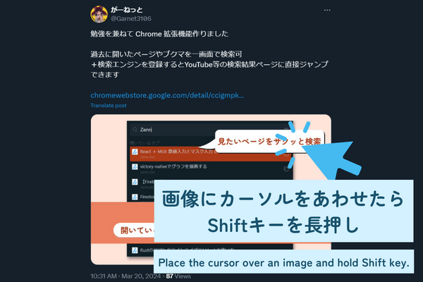
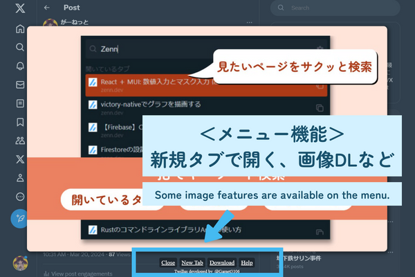
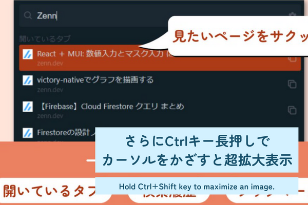

画像メニューのサイズを変更しました。
Fixed size of the image menu.
Twillus Update
使い方
  v2.1.0
リリースノート・ガイドページを追加しました。
Added release note / guide page.
Added release note / guide page.
v2.0.0
拡張機能の名称を Twillus に変更しました。
Renamed the extension name to Twillus.
Renamed the extension name to Twillus.
画像の超拡大機能を追加しました。
Added maximum zoom feature.
Added maximum zoom feature.
画像メニューにショートカット機能を追加しました
Added shortcut features on the menu.
Added shortcut features on the menu.
v1.0.0
Twitter Image Preview として拡張機能を新規公開しました。
Published the extension as Twitter Image Preview.
Published the extension as Twitter Image Preview.